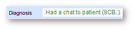
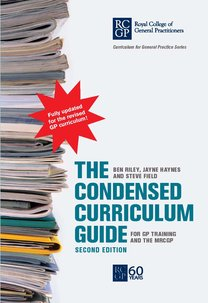

2015
Update on Informatics in the nMRCGP Curriculum
Marcus Baw
RCGP Health Informatics Group
@marcus_baw
nMRCGP Curriculum Update
Plan to redevelop RCGP curriculum was announced in 2013
HIG asked RCGP Curriculum team if we could be involved in revising Informatics content
liaised with RCGP curriculum committee
collaboratively developed a "Wish List of Informatics Training" (via open Google Document) with BCS, RCGP, and others
looked for examples of Informatics curricula elsewhere (eg AHIMA)
Data Quality

trainees need to be taught good practice in data quality
currently informatics not assessed in any but the most informal way
secondary uses (whether or not we agree with them) rely on the data quality
poor data quality impairs clinical safety
Training time available

2015
The GMC approved the new curriculum for implementation from August 2015
Core Competence: Make effective use of information management and communication systems
As a GP, this means you should:
Use records and informatics systems effectively for the full range of activities required in your role, including (but not limited to):
Obtaining clinical and biographical information about patients
Recording patient findings and management plans
Ordering investigations and interpreting results
Prescribing, monitoring and reviewing medicines
Referring patients or seeking advice
Managing administrative work
Communicating with patients and colleagues
Monitoring and managing safety risks
Searching for evidence and guidance
Recording learning activities and personal development plans
Develop techniques that enable you to use electronic patient records and other online information systems during a consultation to enhance communication with the patient
Routinely record and appropriately code each clinical contact in a timely manner and follow the record-keeping and data governance requirements of your organisation
Produce records that are sufficiently coherent, comprehensive and comprehensible, appropriately and securely sharing these with others who need legitimate access to them
Contribute to improvements in the quality of the medical record (e.g. through development of templates)
Make effective use of the tools and systems that enable evaluation and improvement of your personal performance (e.g. through use of reflective portfolios, patient satisfaction surveys, multi-source feedback, significant event audits and other quality improvement tools)
Adopt the appropriate use of new communication technologies, such as social media and online access to information, to improve the accessibility and quality of services and to enhance health literacy amongst the public
how to do what we already do, better
- clinical coding
- information governance
- Personal and patient digital security
- data quality
- How to consult with a computer in the room
- System-Specific Training
- structured records
- Social Media
- QOF
- Decision Support
what's happening to health IT that GPs need be aware of
- patient online access
- record sharing and locality health records
- Apps
- Secondary Use Data
- Political aspects of GP IT
Suggestions for those GP trainees with Informatics interest
GMC view
"We cannot allow four year training without the commitment that it will be adequately resourced"
RCGP view
"Four year training is essential to ensure GPs of the future have the right skill set"
Informatics Community's view
"Can't we just fix the Informatics content of the three year curriculum?"